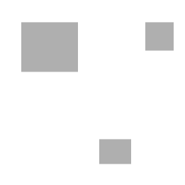
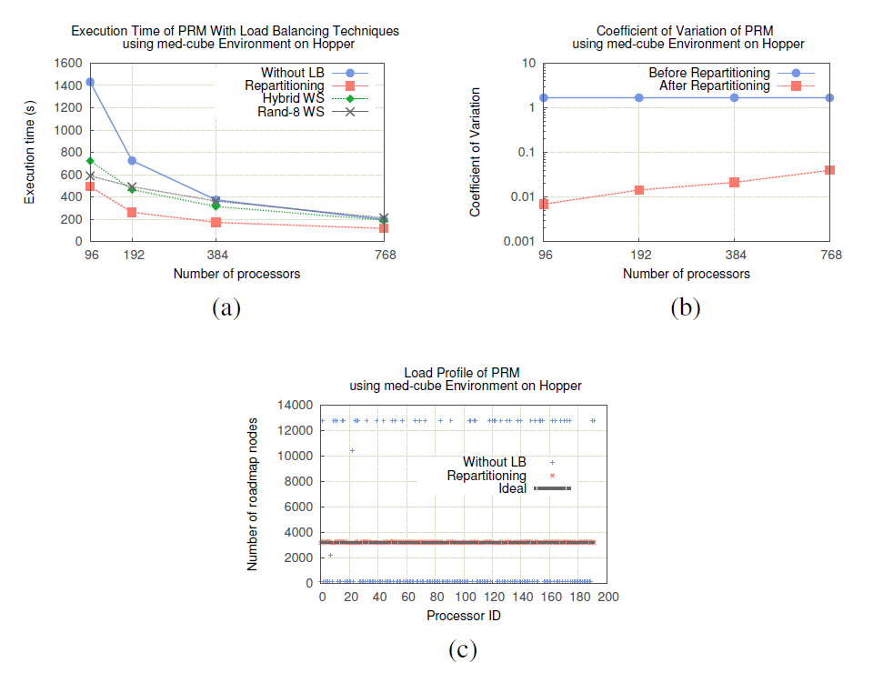

class: center, middle # Using Load Balancing to Scalably Parallelize Sampling-Based Motion Planning Algorithms ## IPDPS 2014 Presented by Brendan Benshoof --- # What is Motion based planning? - Find a reasonable path for an object through space - This was initially formulated for robotics, but it has found applications in other areas. --- ## Configuration space - Given an environment, configuration space describes what regions a robot can and cannot occupy. --- ## Configuration space  --- ## Configuration space <table align="center"> <tr> <td>  </td> </tr> </table> --- ## Configuration space <table align="center"> <tr> <td> </td> </tr> </table> --- ## What are C_free and C_obstacle? - C_free is the set of locations that the 'robot' can feasible exist in without intersecting with an obstacle - C_obstacle is complement to C_free and represents spaces the 'robot' cannot traverse - Parts of C_free may be unreachable from a given starting position --- # Path Finding <table align="center"> <tr> <td> </td> <td> </td> </tr> <td align="center"> Good </td> <td align="center"> Bad </td> </tr> </table> --- # Sample Based Searching - Test points in Configuration space for validity - Connect these dots to find a valid path to the target <br> <table align="center"> <tr> <td> </td> </tr> </table> --- ## Rapidly Exploring Random Tree (RRT) ``` Inputs: environment E, root R, number of nodes P, number of iterations K, maxium inter-node distance delta Set Q = [R] //nodes in the tree Repeat K times: Set RandP = P randomly selected points in E For p in RandP: if p is a valid configuration: find: near_Point = closest point in Q to p if distance p->near_Point < delta: Add p to Q: add edge p->near_point Output: Q, Tree rooted at R ``` --- ## Probabilistic Roadmap Method (PRM) ``` Inputs: environment E, number of nodes P, number edges K Set Roadmap Graph R = Empty Set Samples = P randomly selected points Add all points in Samples to Roadmap for x in Samples: Peers = K nearest other points in Samples for y in Peers: Add edge from x->y in R Output: R, Roadmap of E ``` --- ## How can we balance the load? - Because we don't know where C_obstacle is before beginning to search, initial allocations of work are imbalanced - Two major options - periodic re-balancing - work stealing --- ## Work Balancing - build a hypersphere in C_space - break it into regular arcs - regular sampling of the surface, then use center->point ray as a voronoi generator - they call this a "conic section" however this is a misnomer - build a region graph - delunay peers - sample and build a tree locally - link trees across edges --- ### Uniform Radial Subdivision ``` Input: Environment E, root Q, number of nodes N, number of processors P Output: Road map Graph of E Set Region Graph R = Null Set Let R_d = subdivision of E into P regions add each region of R_d as a vertex to R for all neighboring regions (r1,r2) in R_d: add edge (r1,r2) to R For all regions r in R_d in parallel: G_r = graph constructed using RRT or RPM For all edges (r1,r2) in R: Link subgraphs of r1 and r2 ``` --- ### Uniform Radial Subdivision <br> <table align="center"> <tr> <td> </td> </tr> </table> --- # Repartitioning - The Repartitioning algorithim centers on estimating the workload of a partition and building a weighted partitioning as a result. - using PMR is easier to predict the workload than RRT ``` Input: Regional graph, sequential planner Output: Set of constructed RRT branches or PRM roadmaps W ← Null Set for all regions v_i ∈ V par do W_i ← ComputeRegionWeight(v_i) GraphRepartition(R, W) for all regions v_i ∈ V par do G ← Independently construct regional roadmap or RRT using ``` --- ## Variance in load distribution <br> <table align="center"> <tr> <td> </td> </tr> </table> --- ## Experimental versus theoretical improvement <br> <table align="center"> <tr> <td> </td> </tr> </table> --- ## Experimental results <br> <table align="center"> <tr> <td>  </td> </tr> </table> --- # Work Stealing - Each processor is assigned a "todo" list of smaller regions - When a processor has exhausted its own list, it begins to steal work from other regions - strategies include: - Rand-K - Choose K random other processors to try and steal work from - Diffusive - Request work from predetermined peers (2d mesh in examples) - Hybrid - Initially try Diffusive - Fall back on Rand-K if diffusive fails --- # Efficacy of Work stealing <br> <table align="center"> <tr> <td> </td> </tr> </table> --- # Conclusions - Load balancing strategies can improve the runtime of a parallel algorithm - In general, load balancing strategies can only mitigate against "worst case" distributions of work. They will not speed up an algorithm's asymptotic behavior. --- # Citations - Fidel, A.; Jacobs, S.A.; Sharma, S.; Amato, N.M.; Rauchwerger, L., "Using Load Balancing to Scalably Parallelize Sampling-Based Motion Planning Algorithms," Parallel and Distributed Processing Symposium, 2014 IEEE 28th International , vol., no., pp.573,582, 19-23 May 2014 doi: 10.1109/IPDPS.2014.66 - Other images attributed: - By Simeon87 [CC BY-SA 3.0 (http://creativecommons.org/licenses/by-sa/3.0) or GFDL (http://www.gnu.org/copyleft/fdl.html)], via Wikimedia Commons